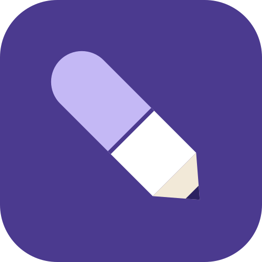

問題はオリジナル作成です。出題形式は認定試験に合わせ「5肢から正しいものを2つ選ぶ」形式が中心。最新のガイドライン改訂は必ず原典で確認してください。記録はこの端末のブラウザにのみ保存されます。
表は横にスクロールできます。○△×は学習用の大まかな目安です。実際の選択は施設のアンチバイオグラムと感受性結果で判断します。
代表的な経験的治療の一例です。重症度、耐性菌リスク、アレルギー、施設の感受性データで変わります。